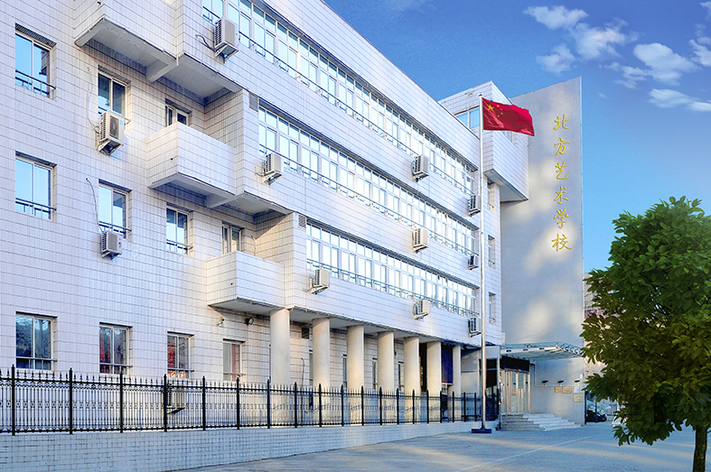
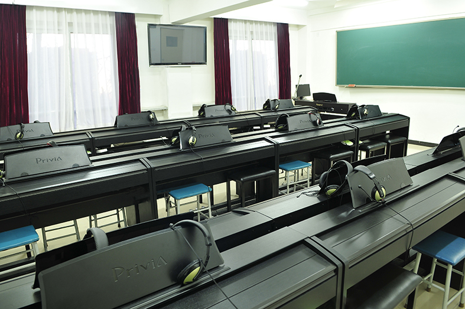
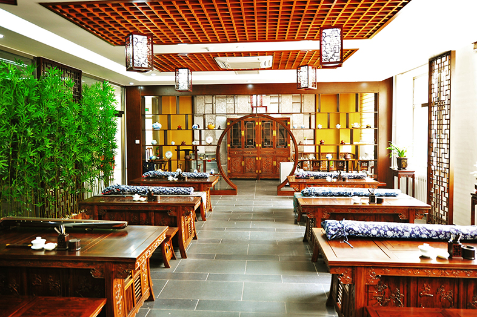
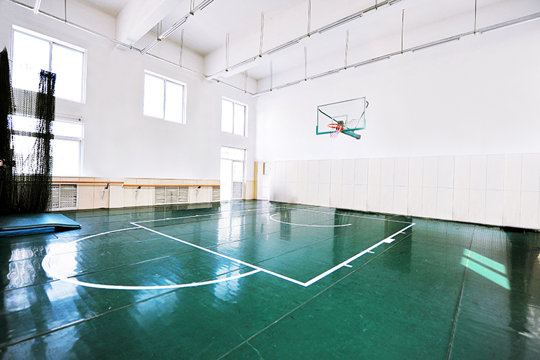
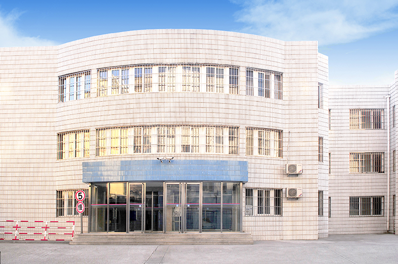
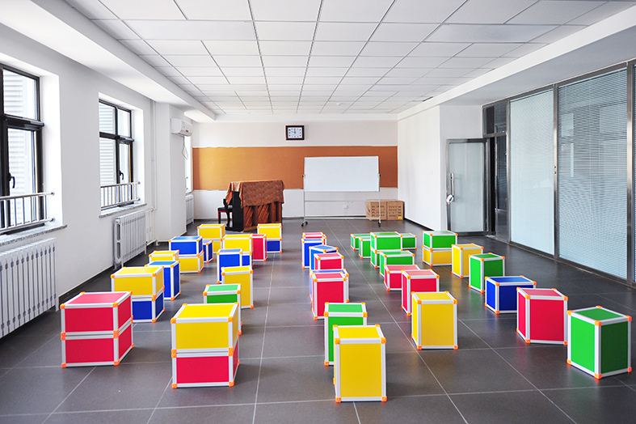

北京市北方艺术学校是经石景山区教委批准的、由北京市成人公办高校主办的( 京H90062）艺术学校。学校建筑面积20463平方米，校舍建筑面积10000平方米。学校艺术、文化教育师资雄厚，教育、教学严格有序。图书馆有各类图书资料13万多册。学校的多媒体教室、音乐教室、舞蹈教室、美术教室、计算机教室等各类教学设施先进，学生宿舍、餐厅、业余活动室等生活设施完备。
学校常年开设音乐、舞蹈、美术、表演艺术等艺术类培训项目。学校依托公办成人高校的优势资源，采用校企合作、产教融合的形式，将非学历培训与学历教育相融合，技能培训与岗位实践相结合，帮助学生既能学到专业技能，又能掌握较系统的专业知识。学生在参加培训期间，可考取相关院校的大专及本科学习，毕业后能获得相应高校的大专、本科学历。
一、礼堂和报告厅


二、多媒体教室

三、舞蹈教室

四、天光美术教室

五、合唱教室

六、钢琴教室
七、计算机教室

八、学生宿舍

九、食堂

为了贯彻落实关于“大力发展职业教育，提高高等艺术教育质量”的要求和积极响应《国务院关于大力推进现代职业教育改革与发展的规定》。经过认真的实践和调研，结合目前国内以及国外新媒体企业和艺术行业的用人需求和现状，大胆创新和尝试新型培养高端职业教育人才的模式，实行“学历教育+精品师资+高级职业技能培养+实习实训”相结合的独立培养模式，实现人才培养标准和要求与企业用人标准和要求高度对接，宗旨为培养质量过高、素质过硬的综合性高端专业人才。
一、流行演唱
我校根据欧美音乐的发展与类别和学生的风格倾向将流行演唱分为三个教研室—“摇滚，乡村，民谣类”，“布鲁斯，R&B，索尔（灵歌）及FUNK”和“爵士演唱”等项目。在教学方式上，我校采取1对1特别辅导和1对4-6人的小组辅导相结合的方式，针对每个学生特有的风格及气质特点，进行个性化的演唱指导。
二、流行乐器
流行器乐以美国伯克利音乐学院现代音乐教学理念为基础，开设的项目有爵士钢琴、吉他、贝司、爵士鼓、萨克斯、铜管、古巴打击乐等。开设的课程除了一些传统的乐理，视唱，爵士和声，爵士节奏，爵士合奏，摇滚合奏课程，也有一些特色模块课，如：录音课，MIDI制作课，吉他效果器使用课和录音实践课等等。我们的教学风格多样化，包括爵士、摇滚、拉丁、R&B、Funk、Blues等，旨在培养出具有个性化、市场化的综合型演奏人才。
三、舞蹈
舞蹈表演根据艺术市场的要求，以就业为目的，树立“一专多能”、“培养复合型人才”的现代教育理念。让学生具备三大舞种（民间舞、古典舞、现代舞）的表演与教学实践能力，让学生能够更好的满足市场对人才多元化的需求。
四、表演艺术
表演艺术的培养要求是让学生主要通过戏剧、影视表演、语言艺术、舞蹈和声乐艺术等专业技能训练，以及编、导、演的基础理论知识的学习，受到哲学、美学、心理学、逻辑学、戏剧史、电影史、音乐史、文艺理论、艺术欣赏等系统教育，有良好的创作意识，审美情趣，生活态度，表达艺术作品思想与情感的基本能力。
五、媒体艺术设计（音乐类、美术类）
媒体艺术（音乐方向）是一个以音乐和数字媒体技术相结合的艺术作品设计与制作的新型项目。随着多媒体技术的快速发展，日益普及的影视音乐、动漫音乐、游戏音乐、广告音乐等配乐制作的新兴实用技术所构成的新一代数字传播媒体形成了新的产业方向，蕴藏着巨大的商机和广阔的就业前景。
媒体艺术（美术方向）是信息科学和文化艺术相互交叉与融合的综合学科门类，为了培养学生扎实的视觉设计、媒体设计、交互设计能力，掌握跨平台交互产品设计的流程、原理和方法，从而成为具有良好的合作沟通能力和创新精神的应用型高级人才。
※毕业后符合条件者颁发国家承认专科、本科毕业证书。
※毕业后符合条件者颁发相关的从业资格证书。
※开设职业规划素养课，帮助毕业生找准职业定位。
※ “一带一 ”工作室
学校开设音乐工作室，为在校学生提供音乐制作，词曲创作，歌曲发行，乐队组建等实践实训机会。
※ A 班就业“全班抬”
根据学生的在校综合表现，学校定期选拔优秀资质学生进入 A 班进行定向培养，全方面培养学生理论与实践相结合的能力，保障学生毕业后高薪就业。
报考条件：
1、年满16周岁；
2、身体健康，五官端正，无色盲或色弱者；
3、通过学校组织的艺术类专业考试。
报考资料：
1、本人身份证原件及复印件；
2、一寸免冠彩照4张（蓝底）；
3、高中毕业证或同等中等学历毕业证书。
报名方式：凡符合报考条件的考生，可来校报名、电话报名，网上报名。
报名网址：www.bjbfyx.com
报名电话：010-57111195 赵老师：13718152337 ；张老师：13701390767。
报名时间：冬季招生：每年11月10日至次年2月20日（3月1日开学）
秋季招生：每年6月1日起至8月25日（9月1日开学）。
学校地址：北京市石景山区八大处路20号（北京军区斜对面）